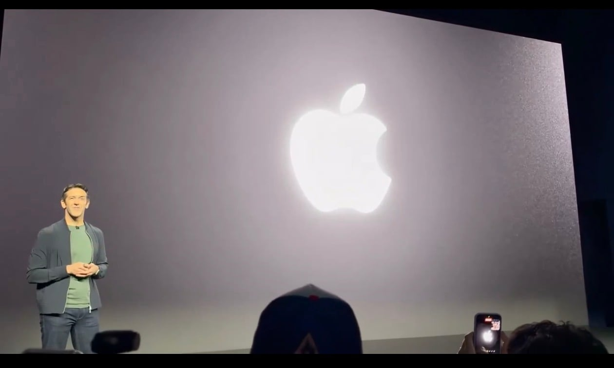

맥북프로 후면 애플로고 이제 프로부터 다시 빛나게 바뀜 ㄷㄷ

맥북프로 후면 애플로고 이제 프로부터 다시 빛나게 바뀜 ㄷㄷ
꼴잘알
pro? ㄴㄴ proled xdr 버전만 해당되네요
애플CEO 이번에 삼성에서 이직한 새끼아님?
근본있네 내 2013맥북프로를 이젠 업그레이드 해도 되겠다
와우 대단해
줸장~~~~, 스티브 잡스가 무덤에서 벌떡 일어난줄 알았다고!
혁신 인정
혁신했어요
베터리 타임 얼마나까짐? 저거 안켜면 1시간 더 작동하거나 그런건 아님?
저건 어떻게 했는지 모르겠는데 예전 맥북은 화면 백라이트가 뒤쪽에 비치도록 만든거였음 딱히 LED를 더 추가한 것도 아님
그럼 빛샘도 못잡고 출시한거야?
으악 오히려 저거 빛나는거 너무 티내는거 같아서 진짜 개싫었는데
끄는 옵션 없음? 맥을 안써봐서 진짜 모름
옛날 맥북 기준으로 액정 밝히는 불로 동시에 로고로 밝혔기 때문에 액정을 켰을 때는 무조건 로고도 들어왔었음

얘넨 기술력도 없으면서 뭐이리 제품 출시를 많이하냐 ㅋㅋ
또 삼성꺼 부품이나 갖다썼을듯 ㅋㅋ
애플실리콘 스팩모르나?
감성 값으로 얼마 더 올릴까 ㅋㅋㅋ
내가 애혐인데 저건 옳다.
지들 생각에도 반도체는 오르는데 딱히 할 수 있는 것도 없고 정말 답이 없었나보네 ㅋㅋ
셀룰러나 처 넣어줘라
혁신은 역시 애플이다...
톤케했어요
ㅏ